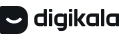
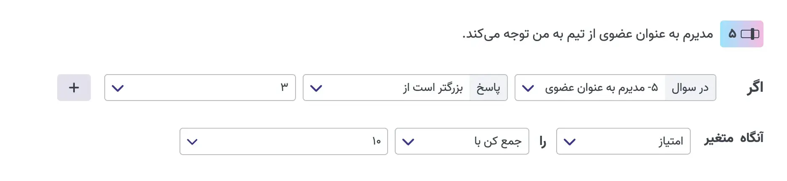
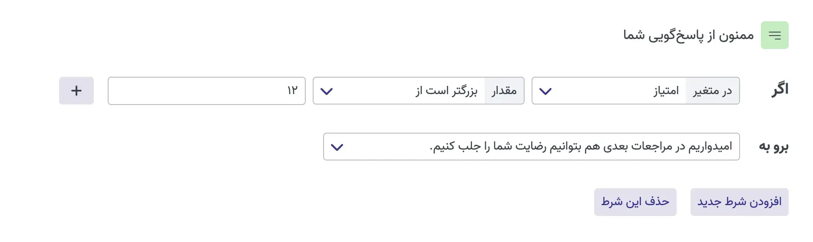
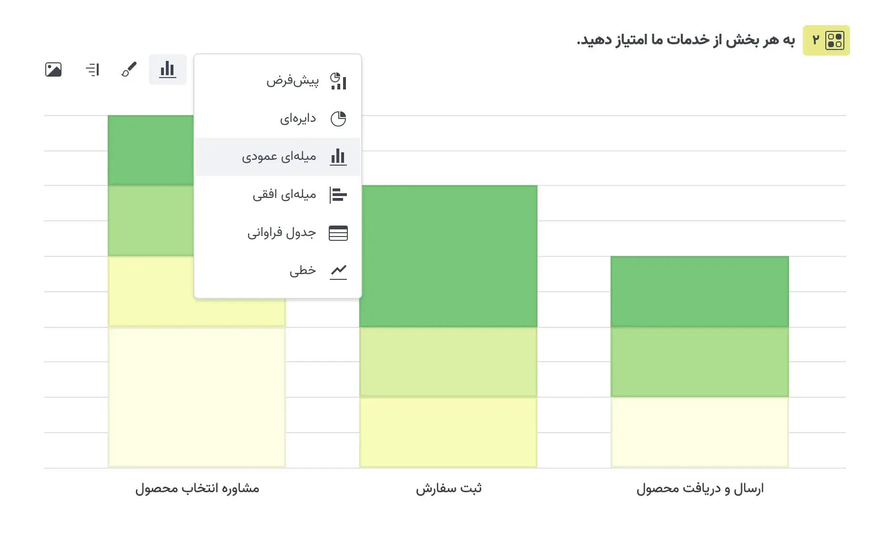
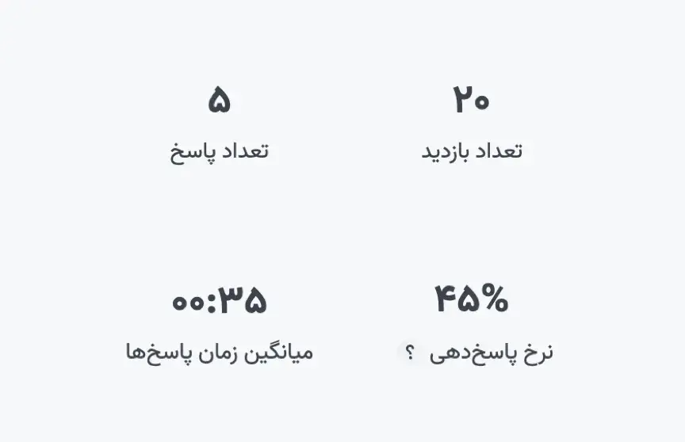
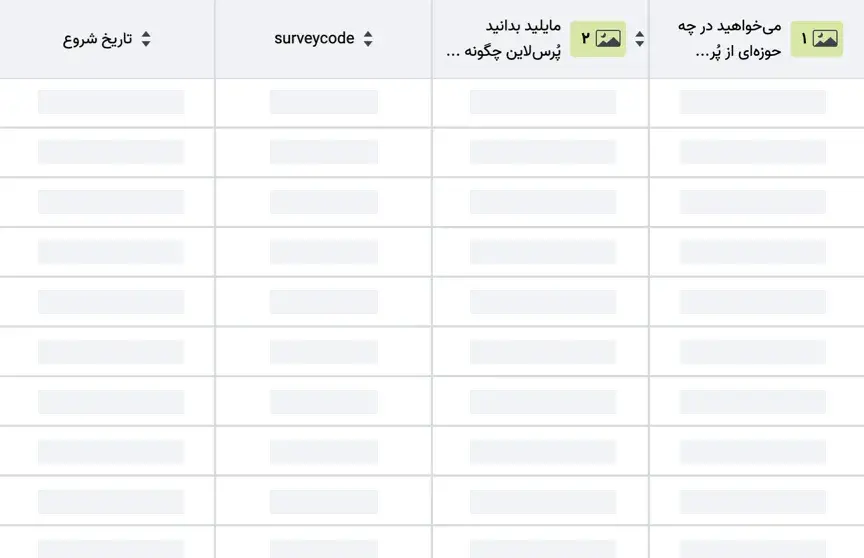

پرسشنامه، فـرم و آزمون آنلاین بسازید
و دادههای خام را به تصمیمهای اثربخش تبدیل کنید
رایگان شروع کنیدو دادههای خام را به تصمیمهای اثربخش تبدیل کنید
رایگان شروع کنیدمورد اعتماد بیش از ۱۰٬۰۰۰ شرکت، سازمان و موسسه آموزشی
با فرمهای آنلاین تعاملی و ابزارهای تحلیلی قدرتمند، کسبوکار خود را متحول کنید
| پرسشنامهساز | فرمساز | آزمونساز |
با پرسشنامهساز آنلاین تحلیلی کارآمد بر پایه داده باکیفیت خواهید داشت
با امکانات و کاربردهای پُرسلاین در ساخت پرسشنامه آشنا شوید.
نمایش پرسشنامه| ایجاد | طراحی | ارسال | گزارش |
به روشهای مختلف پرسشنامه و فرمها را برای مخاطبان خود بفرستید
گامی فراتر از رضایتسنجی خدمات و مدیریت ارتباط با مشتری بردارید.
همه ابعاد کسبوکار، تجربه مشتری را رقم میزنند.
مدیریت تجربه مشتری
کارکنان، تجربه مشتری را رقم میزنند و سازمان تجربه کارکنان را.
تجربه کارکنان فراتر از تردد و حقوق دستمزد، به تعلق خاطر و توسعه
شایستگیهای کارکنان میپردازد.
مدیریت تجربه کارکنان
بر پایه دادههای بازار و تحلیل آنها، تصمیم به سرمایهگذاری در
محصول یا خدمتی جدید بگیرید.
تحقیقات بازار
پژوهش دانشگاهی
گردشگری و هتل
رویداد و همایش
بازاریابی دیجیتال
روانشناسی
سلامت و بیمارستانی
پرسلاین، به ما این امکان را داد تا بتوانیم در کمترین زمان و با بالاترین دقت دادههایی را جمعآوری کنیم که در روشهای سنتی برایمان هزینه ریالی و زمانی چند برابری داشت.
پویان ابراهیمی سرگروه تحقیقات بازار و هوشمندی تجاری شرکت شاتلبا سوالهای متنوع هر نوع دادهای را جمعآوری کنید.
از مخاطبانتان اطلاعات متنوعی مانند نام، شماره تماس، سن، تاریخ، ساعت، لینک و … جمعآوری کنید.
به مخاطبتان امکان ارسال عکس، ویدیو، صوت و هر فرمت دلخواهی را بدهید.
نظرات مخاطبانتان را با ابزارهای جذاب بصری مانند سوال طیفی، اسلایدر یا درجهبندی بپرسید.
به فرمهای خود درگاه پرداخت اضافه کنید.
با سوال ماتریسی سوالهایی با گزینههای یکسان را سریعتر و سادهتر و در قالب جدول بسازید.
با تعریف رجکس (Regex) با هر الگوی دلخواهی اطلاعات جمعآوری کنید.
پرسلاین اگر تنها سامانه یکپارچه نظرسنجی در ایران نباشد، بدون شک بهترین و کاملترین ابزار ساخت پرسشنامه و نظرسنجی محسوب میشود.
هومن خسروی توسعهدهنده کسبوکار سایت شببرای پاسخهای کاربران و گزینههای انتخابی آنها مقادیری در نظر بگیرید و روی این مقادیر فرمول تعریف کنید.
با افزودن شرط، بین پرسشها روابط منطقی تعریف کنید تا براساس هر پاسخ، سوال مرتبطی به پاسخدهنده نمایش داده شود.
تنها به افرادی که مایل هستید اجازه پاسخدهی بدهید.
بعد از پایان پاسخدهی مخاطبان را به صفحههای اجتماعی خود یا لینک دلخواه هدایت کنید.
برای سوالهای آزمون کلید و امتیاز تعریف کنید تا نمره آن خودکار محاسبه شود.
از اطلاعات مشتریهای خود در طراحی پرسشنامه استفاده کنید و از طریق URL به پرسشنامه داده پاس دهید.
فقط به تعداد دلخواهتان پاسخ جمعآوری کنید.
مدت زمان پاسخدهی و شروع و پایان را تنظیم کنید.
محدودیتی وجود ندارد. انتخاب کنید تا چگونه با مخاطبها یا
مشتریهایتان در ارتباط باشید.
https://survey.porsline.ir/s/6yP23lj
yourcompany.ir/survey
در یک نگاه پاسخها را ارزیابی کنید و تصمیمهای دقیقتری بگیرید.
نتایج هر سوال را با نمودارهای متنوع ببینید. رنگبندی کنید و با همکاران خود با اشتراک بذارید.
رنگ هر نمودار را از میان قالبهای آماده انتخاب کنید.
تصویر نمودارها را در گزارشهای خود استفاده کنید.
نمودارها را با افزودن یادداشت با دیگران به اشتراک بذارید.
شاخصهای پاسخدهی را ببینید و آمار کانالهای توزیع را مقایسه کنید.
جزییات پاسخها را ببیند. جستجو و فیلتر کنید. برای تحلیل دقیقتر نتایج را دانلود کنید.
پرسلاین را به نرمافزارها و سرویسهای محبوبتان متصل کنید.
پاسخهای پرسلاین را خودکار به گوگلشیت ارسال کنید.
برای ارتباط همیشگی، در لحظه و چت با پاسخدهندگان
درک دقیقی از نحوه تعامل پاسخدهندگان با پرسلاین خود پیدا کنید.
 Telegram
Telegram
پاسخها را خودکار به تلگرام ارسال کنید و فرد، گروه یا کانالی را برای اقدامی سریع مطلع سازید.
به بیش از ۲۰۰۰ سرویس نرمافزاری دسترسی خواهید داشت!
پاسخها را به سادگی به صدها نرمافزار ارسال کنید.
پاسخها را خودکار به کارت ترلو تبدیل کنید.
برای تحلیل رفتار پاسخدهنده، ریتارگتینگ و… اسکرپیت سرویس خود را به پرسشنامه اضافه کنید.
با ثبت هر پاسخ، خودکار یک رویداد به تقویم گوگل اضافه کنید.
با ایجاد فرم گزارش باگ در پرسلاین، باگهایی که کاربران گزارش میکنند را خودکار به issue های Jira تبدیل کنید.
پاسخها را به کارت کلیکآپ تبدیل کنید.
پاسخدهندههای فرم خود را به لیست مخاطبانتان اضافه کنید.
با ثبت هر پاسخ، بلافاصله، یک فرد یا کانال را مطلع سازید.
پرسلاین با توجه به ویژگیهای بومیسازیشده و امکانات کاربردیاش، گزینه اول انتخابی ما برای بسیاری از فعالیتهای پژوهش بازاریابی است.
توحید علیاشرفی معاون بازاریابی علی بابااز صفر شروع نکنید! از میان بیش از ۲۰۰ نمونه آماده انتخاب کنید.
پرسشنامه رضایتسنجی مشتری
پرسشنامه NPS
پرسشنامه وفاداری به برند
نظرسنجی کیفیت پشتیبانی
نمایش همهپرسشنامه پرسونای مشتری
پرسشنامه رفتار مصرفکننده
پرسشنامه تست محصول جدید
فرم تحقیقات بازار
نمایش همهپرسشنامه ارزیابی ۳۶۰ درجه
نظرسنجی مصاحبه استخدامی
فرم استخدام
نظرسنجی رضایت شغلی
نمایش همهپرسشنامه پایاننامه مدیریت
فرم اطلاعات دموگرافیک
آزمون تعیین سطح زبان
آزمون هوش و استعداد تحصیلی
نمایش همهفرم سرنخ فروش
پرسشنامه ارزیابی اثربخشی تبلیغات
پرسشنامه آگاهی از برند
پرسشنامه تست کپی رایتینگ
نمایش همهنظرسنجی اقامت میهمانان
پرسشنامه ارزیابی رستوران
نظرسنجی تور گردشگری
نظرسنجی تور گردشگری
نمایش همهرضایتسنجی پس از ترخیص
رضایتسنجی مراجعان درمانگاه
ارزیابی فرهنگ ایمنی بیمار
پرسشنامه فالواپ/پیگیری بیماران
نمایش همهفرم ثبتنام مدرسه/اردو
فرم انتخابات شورای دانشآموزی
فرم مسابقه کتابخوانی
نظرسنجی ارزیابی معلمان
نمایش همه